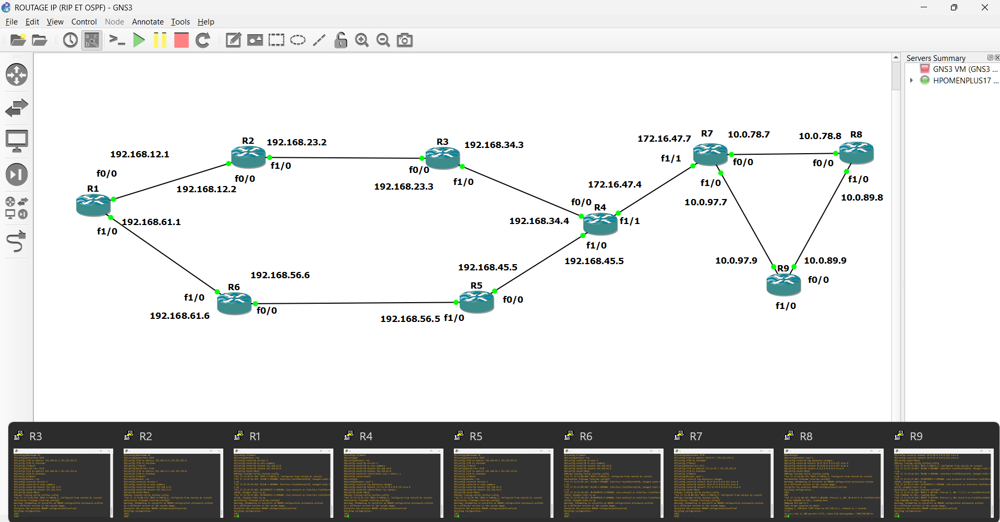
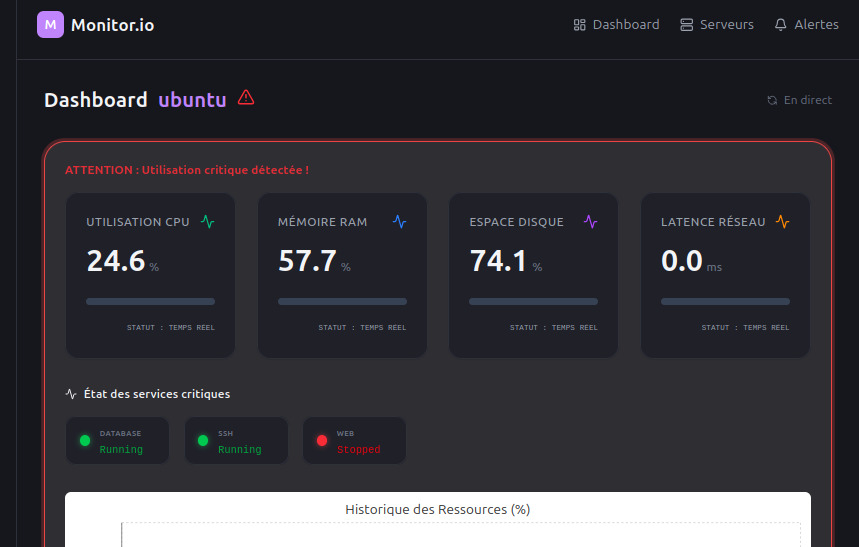
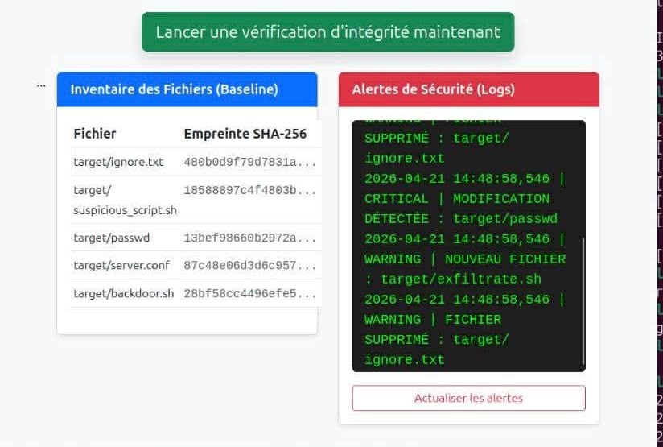
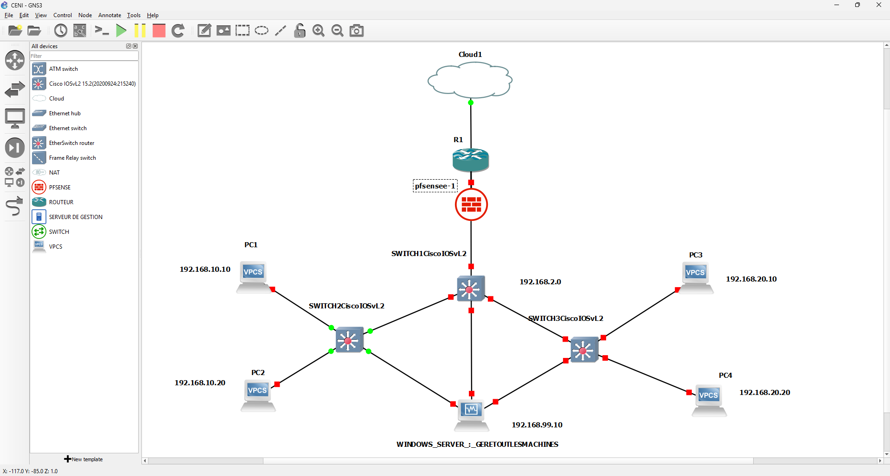

Administrateur Systèmes, Réseaux & Cybersécurité
Étudiant à l'École Nationale d'Informatique (ENI). Passionné par la sécurité des infrastructures, l'administration avancée des réseaux, la virtualisation et la gestion des écosystèmes Linux/Windows.
Arsenal technologique et certifications pratiques
Antananarivo
Conception et déploiement d'une architecture de sécurité réseau contre la propagation de virus. Modélisation de topologies complexes sous **GNS3**, incluant la mise en œuvre d'une solution de détection et de **confinement des postes infectés combinant VLAN segmentés, protocoles NAC et IDS**. Gestion de parcs Windows Server.
Spécialisation avancée en Administration Systèmes et Réseaux. Apprentissage approfondi de la sécurité des infrastructures réseaux et implémentation de maquettes de routage et de commutation d'entreprise.
Spécialisation en routage IP avancé, modélisation théorique et pratique des architectures réseaux sur simulateurs technologiques.
Aperçu des architectures réseaux simulées et du code source
Maquettage et simulation d'une architecture multi-routeurs Cisco sous **GNS3**. Configuration complète du routage dynamique avec redistribution mutuelle des routes entre les domaines de routage **RIPv2** et **OSPF**, optimisation des métriques et convergence rapide des tables.

Développement complet d'une application de supervision en temps réel basée sur ReactJS pour remonter les alertes et vérifier la santé des serveurs critiques.

Création d'un outil de hachage automatisé pour la détection de modification de fichiers système via signature SHA-256.

Mise en place d'une infrastructure SecOps de confinement. En cas d'alerte remontée par l'IDS Suricata, le système isole automatiquement la machine compromise dans un **VLAN de quarantaine** dédié. Déploiement sécurisé derrière un pare-feu pfSense et gestion Active Directory.

Disponible pour des projets d'envergure en sécurité ou en gestion d'infrastructure réseaux.
📍 Localisation : Ankorondrano
📧 Mail : lucasramilavonjy@gmail.com
📞 Tél : +261 38 05 759 33
ROOT@LUCA-RAMIANDRISOA:~# ./close_connection.sh